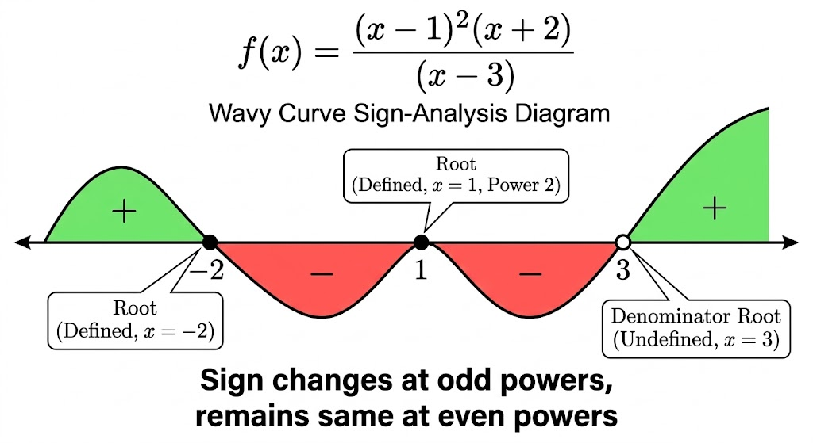
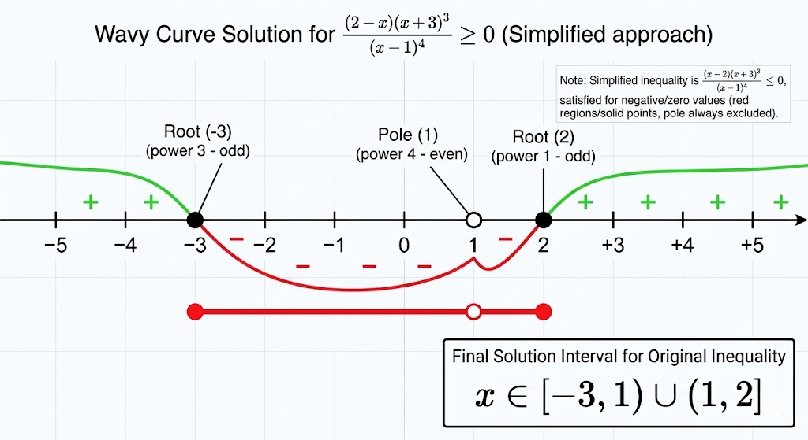

Dear Class 12 Student! Calculus (Functions, Limits, Continuity, Application of Derivatives, and Integration) forms almost 50% of your Class 12 Maths syllabus. You cannot find the Domain or Range of a function, nor can you find where a function is Strictly Increasing or Decreasing, without a flawless mastery of the Wavy Curve Method, Modulus properties, and Logarithms. Treat this detailed module as your ultimate survival toolkit for Calculus. Let's master the foundation!
1. Intervals & Set Operations: The Language of Inequalities
When solving inequalities, the answer is rarely a single number. It is a continuous range of numbers on the real number line, represented by intervals.
Types of Intervals
Open Interval $(a, b)$: All real numbers between $a$ and $b$, excluding the endpoints $a$ and $b$.
Inequality: $a < x < b$. (Represented by open/hollow circles $\circ$ on a number line).
Closed Interval $[a, b]$: All real numbers between $a$ and $b$, including the endpoints $a$ and $b$.
Inequality: $a \le x \le b$. (Represented by filled/solid dots $\bullet$ on a number line).
Semi-Open/Semi-Closed Intervals $[a, b)$ or $(a, b]$: Includes one endpoint and excludes the other.
Inequality for $[a, b)$: $a \le x < b$.
Note: Infinity ($\infty$) and negative infinity ($-\infty$) are NEVER included in closed brackets. Always use open parentheses: $(-\infty, a]$.
Operations on Intervals (Crucial for Domain finding)
Dear Class 12 Student! Calculus (Functions, Limits, Continuity, Application of Derivatives, and Integration) forms almost 50% of your Class 12 Maths syllabus. You cannot find the Domain or Range of a function, nor can you find where a function is Strictly Increasing or Decreasing, without a flawless mastery of the Wavy Curve Method, Modulus properties, and Logarithms. Treat this detailed module as your ultimate survival toolkit for Calculus. Let's master the foundation!
1. Intervals & Set Operations: The Language of Inequalities
When solving inequalities, the answer is rarely a single number. It is a continuous range of numbers on the real number line, represented by intervals.
Types of Intervals
Open Interval $(a, b)$: All real numbers between $a$ and $b$, excluding the endpoints $a$ and $b$.
Inequality: $a < x < b$. (Represented by open/hollow circles $\circ$ on a number line).
Closed Interval $[a, b]$: All real numbers between $a$ and $b$, including the endpoints $a$ and $b$.
Inequality: $a \le x \le b$. (Represented by filled/solid dots $\bullet$ on a number line).
Semi-Open/Semi-Closed Intervals $[a, b)$ or $(a, b]$: Includes one endpoint and excludes the other.
Inequality for $[a, b)$: $a \le x < b$.
Note: Infinity ($\infty$) and negative infinity ($-\infty$) are NEVER included in closed brackets. Always use open parentheses: $(-\infty, a]$.
Operations on Intervals (Crucial for Domain finding)
Union ($\cup$): "OR". Combines all elements from both intervals. Example: If Domain 1 is $x < 0$ and Domain 2 is $x > 5$, the total domain is $(-\infty, 0) \cup (5, \infty)$.
Intersection ($\cap$): "AND". Takes only the overlapping (common) regions of both intervals. Used when solving systems of simultaneous inequalities. Example: $[1, 5] \cap (3, 8) = (3, 5]$.
2. Solving Inequalities: The Wavy Curve Method

Also known as the "Method of Intervals," this is the most powerful technique to solve complex rational and polynomial inequalities of the form $\frac{P(x)}{Q(x)} \ge 0$ or $\le 0$.
Class 12 Trap: Cross-MultiplicationNEVER cross-multiply variables across an inequality sign!
If you have $\frac{1}{x-2} > 3$, you cannot write $1 > 3(x-2)$. Why? Because if $(x-2)$ is negative, the inequality sign must flip, but you don't know if $x$ is greater or less than 2 yet! Correct Method: Bring everything to one side: $\frac{1}{x-2} - 3 > 0$, take LCM, and apply Wavy Curve.
Step-by-Step Wavy Curve Rules
Standardize: Ensure the Right Hand Side (RHS) is exactly zero.
Factorize: Factorize the numerator and denominator completely into linear factors: $(x-a)^p(x-b)^q \dots$
Make $x$ Positive: Ensure the coefficient of $x$ in every factor is positive. If you have $(a-x)$, multiply the entire inequality by $-1$ to make it $(x-a)$, and flip the inequality sign! (e.g., $>0$ becomes $<0$).
Plot Critical Points: Find the roots (where each factor becomes zero) and plot them on the real number line in ascending order.
Assign Signs: The rightmost region (greater than the largest root) is always positive ($+$).
The Wavy Curve (Checking Multiplicity): Move leftwards across the critical points:
If the factor's power (multiplicity) is ODD (e.g., $1, 3, 5$), the curve crosses the axis and changes the sign ($+$ becomes $-$, or $-$ becomes $+$).
If the factor's power is EVEN (e.g., $2, 4$), the curve bounces off the axis and keeps the same sign (do not alternate).
Final Answer: Select the $+$ regions if the standardized inequality is $> 0$ or $\ge 0$. Select the $-$ regions if it is $< 0$ or $\le 0$. Always exclude roots of the denominator (use open brackets)!
Practice Problem 1Question: Solve for $x$: $\frac{(2-x)(x+3)^3}{(x-1)^4} \ge 0$

Solution:
1. Standardize: The factor $(2-x)$ has a negative coefficient for $x$. Multiply by $-1$ to make it $(x-2)$. Crucial step: FLIP the inequality sign!
The new inequality to solve is: $\frac{(x-2)(x+3)^3}{(x-1)^4} \mathbf{\le 0}$
3. Plot on Number Line & Wavy Curve: Plot $-3$, $1$, $2$.
- Region right of $2$ ($x > 2$): Sign is $+$.
- Cross $2$ (Odd power): Sign changes to $-$. (Region between $1$ and $2$).
- Cross $1$ (Even power!): Sign remains $-$. (Region between $-3$ and $1$).
- Cross $-3$ (Odd power): Sign changes to $+$. (Region left of $-3$).
4. Select Required Regions: We are solving $\le 0$ (based on the flipped sign in step 1!), so we want the $-$ regions.
- Negative regions: $[-3, 1) \cup (1, 2]$. Notice how we excluded 1 with an open parenthesis.
Final Answer: $x \in [-3, 1) \cup (1, 2]$
3. Modulus Function ($|x|$)
The modulus or absolute value function gives the non-negative value of a real number regardless of its sign. Geometrically, it represents the distance of the number $x$ from the origin ($0$) on the number line.
Piecewise Definition
The formal mathematical definition is heavily used in Calculus (especially Definite Integration):
$$
|x| =
\begin{cases}
x, & \text{if } x \ge 0 \\
-x, & \text{if } x < 0
\end{cases}
$$
Note: The $-x$ when $x < 0$ actually makes the overall value positive (e.g., $-(-5) = +5$). Another vital equivalent definition is $\sqrt{x^2} = |x|$.
Triangle Inequality (Crucial for Limits): $|x + y| \le |x| + |y|$ (Equality holds if $xy \ge 0$, i.e., same sign).
$|x - y| \ge ||x| - |y||$ (Equality holds if $xy \ge 0$ and $|x| \ge |y|$).
Solving Modulus Inequalities
Let $a > 0$ be a positive real number.
Less than type (Internal region): $|x| \le a \implies -a \le x \le a \implies x \in [-a, a]$
Greater than type (External regions): $|x| \ge a \implies x \le -a \text{ OR } x \ge a \implies x \in (-\infty, -a] \cup [a, \infty)$
Practice Problem 2Question: Find the domain of the function $f(x) = \sqrt{5 - |2x-1|}$.
Solution:
For the square root to be real and defined, the term inside must be non-negative ($\ge 0$).
Therefore, $5 - |2x-1| \ge 0$
$5 \ge |2x-1|$
This is a "less than type" modulus inequality: $|2x-1| \le 5$.
Applying the rule: $-5 \le 2x-1 \le 5$
Add $1$ to all parts of the inequality:
$-4 \le 2x \le 6$
Divide everything by $2$ (since 2 is positive, signs don't flip):
$-2 \le x \le 3$ Final Domain: $x \in [-2, 3]$
4. Logarithms & Logarithmic Inequalities
A logarithm is the inverse operation to exponentiation. It answers: "To what power must we raise the base to get a certain number?"
Definition & Mandatory Constraints
If $a^c = b$, then $\log_a b = c$.
Mandatory Domain Rules for Class 12 Calculus:
For $\log_a b$ to be defined and real, three conditions must hold strictly:
The argument must be strictly positive: $b > 0$
The base must be strictly positive: $a > 0$
The base cannot be 1: $a \neq 1$
Always check these three conditions before solving any log equation!
Common vs Natural Logarithm
Common Logarithm ($\log x$): Base is $10$. Usually written without a base in chemistry (e.g., pH = $-\log[H^+]$).
Natural Logarithm ($\ln x$ or $\log_e x$): Base is Euler's number $e$ ($e \approx 2.718$). In Class 12 Calculus, every single logarithm derivative or integral (like $\int \frac{1}{x} dx = \ln|x|$) requires base $e$!
Fundamental Properties of Logarithms
Let $m, n > 0$ and base $a > 0, a \neq 1$.
Product Rule: $\log_a (mn) = \log_a m + \log_a n$
Quotient Rule: $\log_a \left(\frac{m}{n}\right) = \log_a m - \log_a n$
Power Rule: $\log_a (m^n) = n \log_a m$
Base Power Rule: $\log_{a^q} m = \frac{1}{q} \log_a m$
Base Change Formula: $\log_a b = \frac{\log_c b}{\log_c a}$ (for any valid base $c$). Or, $\log_a b = \frac{1}{\log_b a}$.
Exponent/Log Inverse Property: $a^{\log_a x} = x$ and $e^{\ln x} = x$. (Crucial for Solving Differential Equations).
Logarithmic Inequalities (The Ultimate Trap)
When solving inequalities like $\log_a x > \log_a y$, the result depends entirely on the base $a$.
The Base Rule for Inequalities
Case 1: Base $a > 1$ (Increasing Function)
The graph goes UP. Therefore, the inequality sign remains the SAME.
If $\log_2(x) > \log_2(y) \implies \mathbf{x > y}$.
Case 2: Base $0 < a < 1$ (Decreasing Function)
The graph goes DOWN. Therefore, the inequality sign FLIPS.
If $\log_{0.5}(x) > \log_{0.5}(y) \implies \mathbf{x < y}$.
Practice Problem 3Question: Solve for $x$: $\log_{0.5}(2x - 3) < 0$
Solution: Step 1: Check Domain constraints FIRST!
The argument of the logarithm must be positive: $2x - 3 > 0 \implies 2x > 3 \implies \mathbf{x > 1.5}$ (Condition A).
Step 2: Solve the inequality.
We can rewrite $0$ as $\log_{0.5}(1)$ because $\log_a(1) = 0$ for any base.
The inequality becomes: $\log_{0.5}(2x - 3) < \log_{0.5}(1)$
Since the base is $0.5$ (which is between 0 and 1), the function is decreasing. We must FLIP the inequality sign when removing the logs!
$2x - 3 > 1$
$2x > 4$
$\mathbf{x > 2}$ (Condition B).
Step 3: Intersection.
The final answer must satisfy both Condition A AND Condition B.
Intersection of $x > 1.5$ and $x > 2$ is simply $x > 2$. Final Answer: $x \in (2, \infty)$
MEGA PRACTICE BANK
Problem 4: Factoring & Wavy CurveQuestion: Solve for $x$: $\frac{x^2 - 4}{x^2 - 9} \le 0$.
Solution:
Factorize both: $\frac{(x-2)(x+2)}{(x-3)(x+3)} \le 0$
Numerator critical points: $2, -2$ (Solid dots)
Denominator critical points: $3, -3$ (Hollow circles, $x \neq \pm 3$)
Plot on number line: $-3, -2, 2, 3$
All powers are odd (1), so signs alternate: $+ \quad - \quad + \quad - \quad +$
We need $\le 0$, so take the negative regions. Answer: $x \in (-3, -2] \cup [2, 3)$.
Problem 5: Combined Domain RulesQuestion: Find the domain of $f(x) = \sqrt{\frac{x-1}{x+2}} + \sqrt{4-x}$.
Solution:
Condition 1: Term under first root must be $\ge 0$.
$\frac{x-1}{x+2} \ge 0 \implies x \in (-\infty, -2) \cup [1, \infty)$ (using wavy curve).
Condition 2: Term under second root must be $\ge 0$.
$4-x \ge 0 \implies x \le 4 \implies x \in (-\infty, 4]$.
Intersection of both conditions: Answer: $x \in (-\infty, -2) \cup [1, 4]$.
Problem 6: Logarithmic Domain TrapQuestion: Find the domain of $f(x) = \log_2(\log_3(x-1))$.
Solution:
Condition 1 (Inner Log): The argument of the inner log must be $> 0$.
$x - 1 > 0 \implies x > 1$.
Condition 2 (Outer Log): The argument of the outer log must be $> 0$.
$\log_3(x-1) > 0$
Since base is $3 > 1$, function is increasing. Zero is $\log_3(1)$.
$\log_3(x-1) > \log_3(1) \implies x - 1 > 1 \implies x > 2$.
Intersection of $x > 1$ and $x > 2$: Answer: $x \in (2, \infty)$.

 Solution:
Solution: